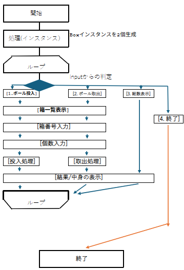

自作したフローチャート
* -----------------------------------------------
* Q 箱を表すクラスBoxを定義し、Boxクラスのインスタンスを2個生成して、 各操作ができるプログラムを作成する。
*
* ■一般クラス：Box ＜フィールド＞ private String color 箱の色 private String shape 箱の形 private int num
* 箱の中のボールの数 private static int totalNumber すべての箱のボールの総数
*
* ＜メソッド＞
* insertBalls … 引数として渡された個数のボールを箱に入れる
*＜Stpe＞
* ① …引数として渡された個数のボールを箱から取り出す
* 個数が不足する場合はすべてのボールを取り出す
* ② … 箱の色・形、ボールの数を表示する
* ③ … すべての箱のボールの総数を表示する
*
*
* ■アプリケーションクラス：Main 実行例の処理ができるよう記述する。
*
* [実行例]
*
* 1. ボール投入 / 2. ボール取出 / 3. ボール総数表示 / 4. 終了>1 0---色：赤, 形：円形, 個数：1 1---色：青, 形：四角,
* 個数：2 ボールを投入する箱の番号を入力して下さい > 1 投入するボールの個数を入力して下さい > 2 2個のボールを入れました。
*
* 1. ボール投入 / 2. ボール取出 / 3. ボール総数表示 / 4. 終了>3 ボールの合計は5個です。
*
* 1. ボール投入 / 2. ボール取出 / 3. ボール総数表示 / 4. 終了>2 0---色：赤, 形：円形, 個数：1 1---色：青, 形：四角,
* 個数：4 ボールを取り出す箱の番号を入力して下さい > 0 取り出すボールの個数を入力して下さい > 2 1個のボールを取り出しました。
*
* 1. ボール投入 / 2. ボール取出 / 3. ボール総数表示 / 4. 終了>1 0---色：赤, 形：円形, 個数：0 1---色：青, 形：四角,
* 個数：4 ボールを投入する箱の番号を入力して下さい > 2 箱の番号の入力が誤っています。
*
* 1. ボール投入 / 2. ボール取出 / 3. ボール総数表示 / 4. 終了>4 アプリケーションを終了します。
*
* ----------------------------------------------------------------------------